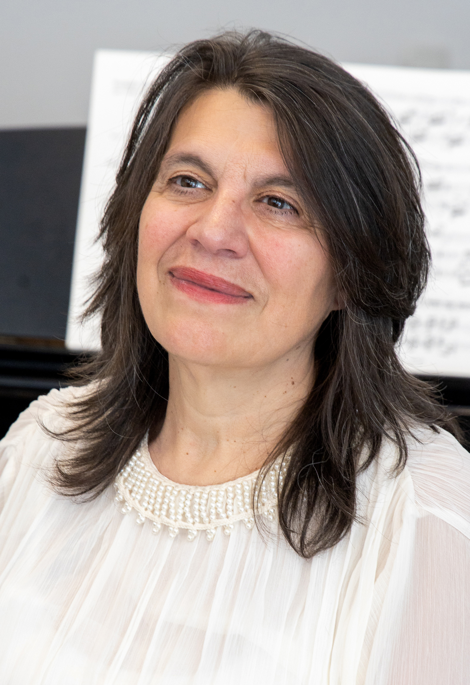
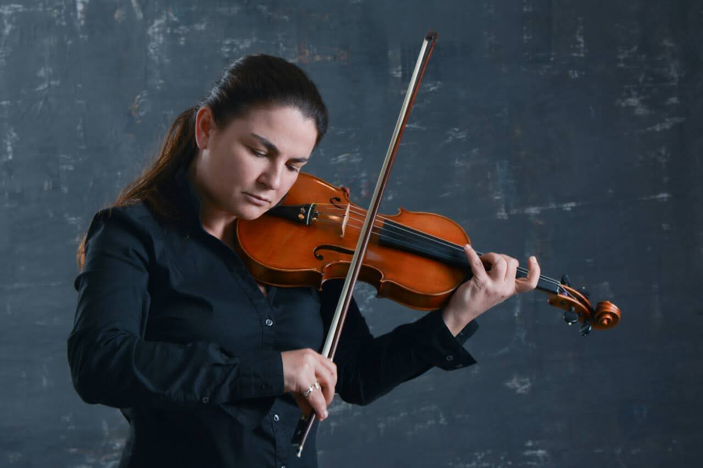

02 CONCERT
23.08.2025
8 PM
ANTON
open stage
Chapel “St. George”
PROGRAM
BELA BARTOK (1881-1945)
SONATA No. 1 FOR VIOLIN AND PIANO BB 84 (1921):
Allegro appassionato
Adagio
Allegro
SONATA No. 2 FOR VIOLIN AND PIANO оp. 76 BB 85 (1922):
Molto moderato
Allegretto. Allegro
PARTICIPANTS

ANGELA TOSHEVA, piano
Angela Tosheva is a Bulgarian pianist with a wide ranging of repertoire. After her academic education in the Bulgarian State Music Academy “Prof. Pancho Vladigerov” and the defense of PhD thesis on chamber music for piano quartet and piano quintet, she continued her musical path as a concert pianist. In 2000 Angela Tosheva and Mikhail Goleminov founded the music label “Orange Factory Psychoacoustic Arts” for their and different concerts and festivals, audiovisual art, composition of electroacoustic music; they also publish music scores and books. They organize numerous festivals, one of them – the Festival for American and Bulgarian Music at the Northern Kentucky University, Ohio, USA in 2008. Angela conducts master classes and is an active teacher. She has given numerous first performances of works by contemporary composers. She has released 15 audio CD and films recordings for the Bulgarian National Television with works by Debussy and Beethoven.

KRASSIMIRA SULTANOVA, violin
KRASSIMIRA SULTANOVA Her first violin lessons she receives from her father, the founder of the Yambol Chamber Orchestra.She finishes the “Pancho Vladigerov” Secondary Music School in Burgas in the violin class of Liudmila Ivanova and “Robert Schumann” Music Academy in Dusseldorf in the violin class of Prof. Rosa Fain, a David Oistrach' student. The most important influence for her formation had Nikolay Sultanov, Prof. Georgi Badev and Prof. Rosa Fain. Krassimira performs succesfully as a soloist and chamber musician in Bulgaria, Germany, Austria, Slovakia, Switzerland, France, Greece, Turkey and USA. She played under the guidance of the following orchestra conductors: Nikolay Sultanov, Nayden Todorov, Dragomir Nenov, Ivan Stoyanov, Yordan Kamdjalov, Wolfram Fuhr, Marc Pubett, Dragomir Yossifov, Grigor Palikarov and others. Her repertoire includes a vast number of solo and chamber works from the Renaissance to the present. She has published 10 CDs with different Bulgarian and European labels. Member of the Bach Society in Leipzig. Since 2002 she is a concertmaster, soloist and artistic director of the “Dianopolis” Chamber Orchestra in Yambol.